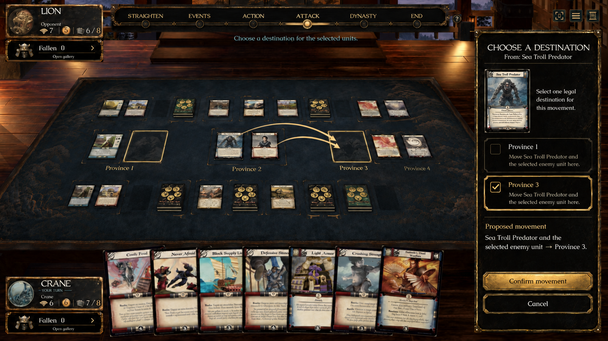
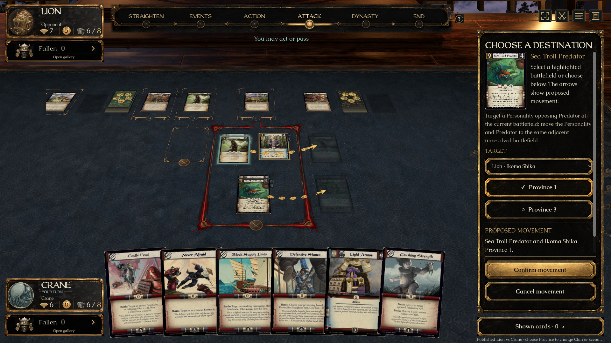
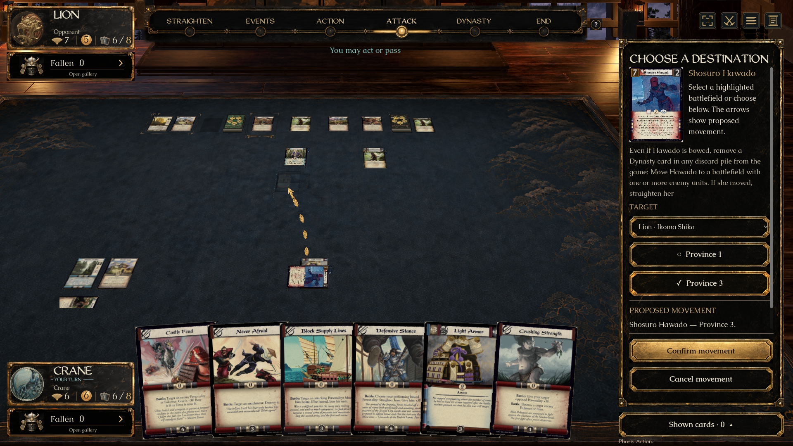
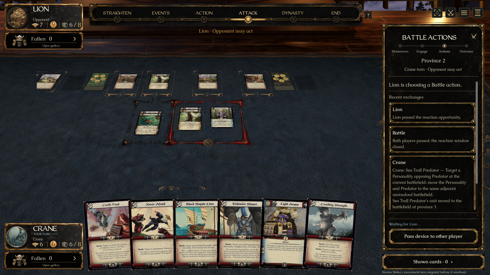
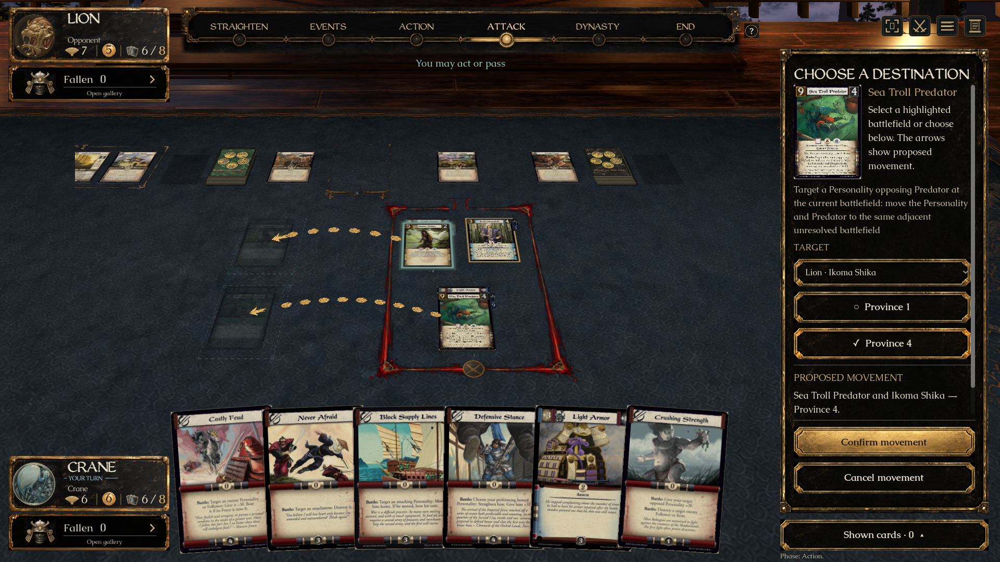
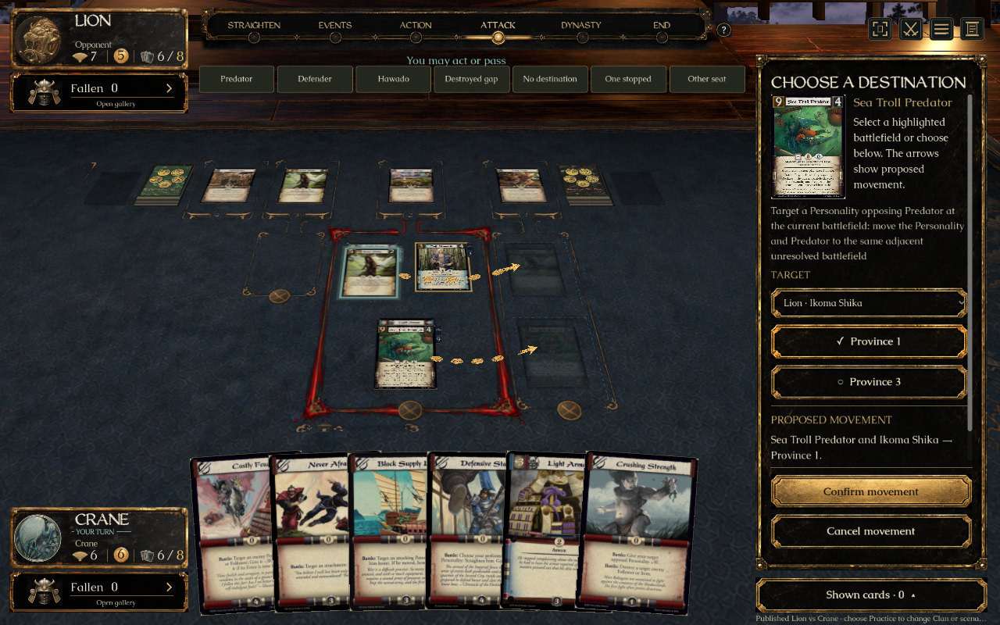

A’s movement sidebar with the existing battle assignment arrows
Approved concept and actual game at equal displayed widths. Full period scans, lacquer atlas and Caudex/WeatheredQuill typography remain intact.

A — source, explicit destination, proposed movement, separate Confirm/Cancel.

Native — each mover has its own proposed stack and the existing assignment arrow; real cards stay at the current battlefield until confirmed.

Hawado moves alone. The targeted Dynasty discard is a removal cost and gets no movement arrow.

Actual partial result — Predator and its Item arrived; Ikoma Shika and its Item stayed after movement was negated.

The engine allows Province 4 across the destroyed Province 3 gap.

1280×800, reduced motion, with the prepared-review navigation visible.
The concept’s illustrative continuous arrows use the exact existing stepping-stone assignment art at Alfredo’s request. Real card printings, court geometry and live choices replace the concept’s fictional state; whole-screen pixel identity is not claimed. Every change remains in a draft PR. No merge is authorized.